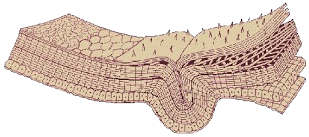

Tema 2. Integumento, segmentación y apéndices

• Estructura del integumento
• Segmentación primaria y secundaria
• Las extremidades de los artrópodos
• Las patas torácicas de los insectos
Capítulo 3. Integumento (texto)
Integumento (video)
Capítulo 4. Segmentación (texto)
Capítulo 5. Las extremidades de los artrópodos (texto)
Capítulo 6. Las patas torácicas de los insectos (texto)
Presentación. Integumento
Presentación. Segmentación
Presentación. Extremidades de artrópodos e insectos
Lecturas complementarias:
• Beutel, R. & S.N. Gorb. 2006. A Revised Interpretation of the Evolution of Attachment Structures in Hexapoda with Special Emphasis on Mantophasmatodea.
• Federle et al. 2002. An Integrative Study of Insect Adhesion: Mechanics and Wet Adhesion of Pretarsal Pads in Ants.
• Gorb, S.N. 1996. Design of Insect Unguitractor Apparatus.
• Niederegger, S. & S. Gorb. 2003. Tarsal movements in flies during leg attachment and detachment on a smooth substrate.
• Trautwein et al. 2012. Advances in Insect Phylogeny at the Dawn of the Postgenomic Era.
• Vincent, J. & U. Wegst. 2004. Design and mechanical properties of insect cuticle.